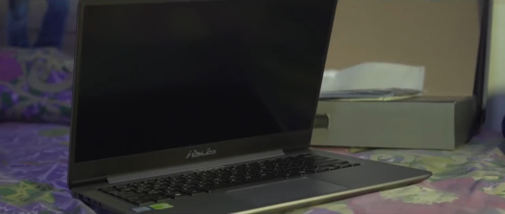
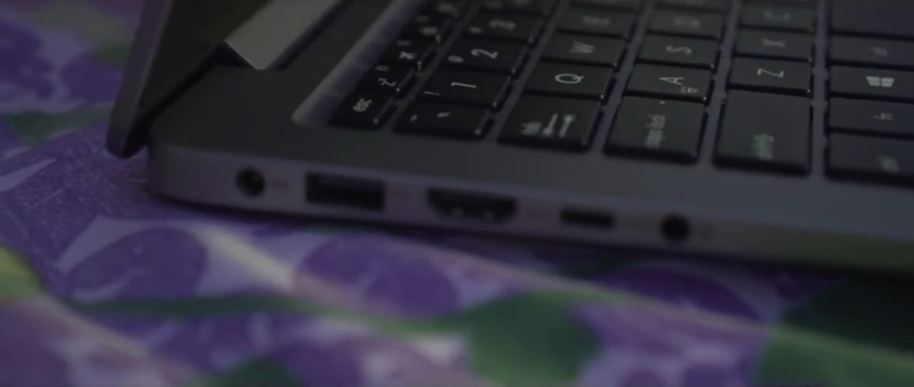
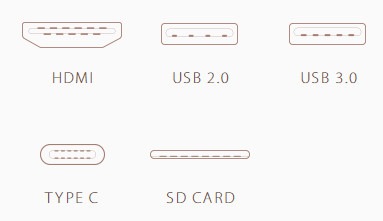

Lihat Kemampuan Laptop Asus Zenbook UX410UQ Ini

Kali ini, saya akan memperlihatkan kemampuan, dari sebuah laptop yang tipis, keluaran ASUS. Laptop ini memiliki kemampuan yang
Over Power dari segi ketebalan, berat, dan spesifikasi.
Kenapa saya bilang Over Power, karena laptiop ini Memiliki ketebalan kurang dari 18.95 mm, beratnya 1,4 Kg , dan sepesifikasinya yang tidak bisa di anggap remeh
hannya dengan meihat tampilan luarnya saja. Berikut adalah spesifikasi nya, yang tertera pada website resmi Asus :
1.Memakai Processor Intel Core i7-7500, dan di lengkapi Sistem Operasi Windows 10.
2.Ram 8GB DDR 4, dengan kecepatan 2133 Mhz
3.VGA memakai Nvidia Geforce 940MX
4.Konektifitasnya memakai Wifi 802.11ac, dan Bluethoot 4.1
5.dan Port-nya tersedia USB Type C, dan ada Port HDMI.
Sekarang kita bahas lebih dalam lagi Perfoma dan fitur-fitur yang tersedia di Laptop Asus-UX410UQ ini, dari bagian atas(Layar) hingga bawah(Keyboard, Touchpad, Port).
Bagian atas(Layar)
1.Layar
Asus Zenbook UX410UQ ini memiliki ukuran layar 14 inch dengan resolusi Full HD(1920x1080),
kok bisa layar 14 inci resolusinya Full HD ??. Karena Asus memakai fitur Slim Bezel ukuran 6mm, jadi layar menjadi lebih besar, dan tidak akan terjadi gangguan pada penampilan gambar,
seperti contoh ( foto dan video nya diperbesar, yang cenderung akan membuat gambar menjadi buram),
itu tidak akan terjadi karena kerapatan Pixel-nya 276 per-inci, jadi fot akan terlihat lebih bersih sebening Kristal.
2.Warna
Untuk warna yang dihasilkan, Zenbook UX410UQ terdapat fitur Range Gamut yang sangat luas dan lebar
dengan 72% NTSC dan 100% sRGB , jadi lebih banyak menampilkan fariasi warna dan warna yang akurat,
kalau penjelasan gamer fitur ini mirip dengan fitur HDR di PS4 PRO.
3.Teknologi ASUS Splendid
Seperti keterangan fitur warna di atas, kalau Zenbook UX410Q menampilkan warna yang lebih akurat dan
lebih banyak fariasi warna, di bantu dengan Teknologi Asus Splendid, yang memiliki 4 pengaturan Warna
dengan sekali klik, yaitu : Normal Mode, Eye-Care Mode, Vivid Mode, dan Mode Manual.


| Normal mode | Normal mode atau mode default ini memiliki pewarnaan yang akurat dan telah di optimalkan. |
| Eye-Care mode | Mode ini adalah yang terbaik menurut saya, karena bisa mengurangi 30% cahaya biru yang keluar dari Lcd, sehingga meminimalisir kerusakkan pada mata. |
| Vivid mode | Sangat disarankan menggunakan mode ini bila ingin menampilkan pressentasi desain atau gambar dan video, karena di mode ini, meningkatkan saturasi warna dan menambahkan vibrancy warna tanpa mengurangi ke aslian gambar. |
| Manual mode | di mode ini kalian bisa mengatur warna sesuai keinginan kalian. |
Bagian Bawah (Keyboard, Touchpad, Port, Harddisk, dll)

1.Backlight Keyboard
Backlight keyboard Zenbook UX410UQ di desain dengan tujuan untuk kenyamanan para penggunanya,
dengan jarak antar tombol 1,6mm sehingga tidak membuat jari berdempetan, dan terdapat cahaya bagian
belakang, agar penggunaan yang memiliki pencahayaan kurang, bisa tetap nyaman menggunakan zenbook ux410uq
2.Touchpad
Touchpad ini memiliki sensitifitas yang tinggi dan akurasi yang luar biasa, karena memakai teknologi
yang sama pada pengembangan layar sentuh smartphone, dengan melapisi kaca pada touchpad, dan dari segi
desain nya terdapat potongan berlian di sekitar touchpad. Ada juga fitur Login dengan sidik jari, jadi
kalian bisa login ke windows, dengan menempelkan sidik jari kalian ke touchpad.
3.Kapasitas penyimpanan
Kapasitas harddisk zenbook ux410uq memiliki 1TB Harddisk(HDD), dan 128 Solid-State Disk(SSD).
Bagi yang belum tau kelebihan SSD yaitu dapat mempercerpat proses starting windows(pada saat
menghidupkan laptop), dan bisa membuka atau mengcopy file-file besar dengan cepat.
4.Koneksi

Port USB 2.0 adalah versi lama yang bila digunakan untuk mentransfer file besar sangat lah lama, bahkan
bila menggunakan windows 7 akan tambah semakin lama. Sekarang zenbook UX410UQ menggunakan koneksi USB 3.0
yang akan mempercepat 2X dari versi USB 2.0, dan juga laptop ini dilengkapi Port USB Type-C, yaitu versi
paling baru untuk saat ini, yang dapat mempercepat pengiriman data hingga 10X lebih cepat dari USB 2.0 .
Ada juga Slot SD Card untuk kartu memori
Dan Port HDMI untuk menyambungkan monitor dengan Projector atau memakai dual monitor.
Untuk konektifitas Wifi dan Bluethoot, zenbook ux410uq memakai tipe Wi-Fi 802.11ac yang terbaru sehingga
lebih cepat 2,8X dari 802.11 b/g/n, sehingga pemakaian wifi bisa lebih cepat dan lebih jauh. Dan untuk
Bluethoot memakai versi 4.1, yang bisa terhubung cepat dengan device lain dan tidak boros baterai.
5 Suara
Laptop ini memiliki suara yang luar biasa, dengan menggunakan teknologi Asus Sonic Master yang dapat
menghasilkan kualitas suara yang bagus, dan sangat pas bagi pecinta film, atau video editor.
Sekian untuk artikel Riview Asus Zenbook UX410UQ , laptop ini sangat lah bagus digunakan dalam berbagai
bidang, dan saya ingin memiliki laptop ini, karena sesuai dengan pekerjaan saya sebagai pekerja freelance
membuat website, yang harus siap kapan saja dan dimana saja bila ada tugas mendadak dari client.
Terima kasih semua telah meluangkan waktu untuk membaca artikel ini, semoga artikel nya membatu, dan
sampai jumpa.